LaserCube Academy · Advanced
LaserCube with TouchDesigner
Six lessons on sending your own TouchDesigner content to the cube over the network: how a laser draws, Ether Dream mode and the laser CHOPs, shapes and point counts, colour, the mouse and music, and what to check when nothing shows. Pass the final quiz and download your certificate.
Course contents0 of 6 lessons done
The questions, the final quiz and the certificate need JavaScript. Without it you can still read every lesson below.
Before you start
How this course works
TouchDesigner can send what you build in it straight to an Ultra MK2 or Pro over the network. The cube runs in its Ether Dream control mode, and TouchDesigner’s Laser CHOP and Laser Device CHOP do the sending. This course follows our four‑part TouchDesigner video series, made for Wicked Lasers by the TouchDesigner artist Owen McAteer of Motus Art.
By the end you can
- explain why a laser draws lines rather than pixels, and build a test shape from SOPs;
- put your cube in Ether Dream mode, read its IP address, and send to it with a Laser CHOP and a Laser Device CHOP;
- keep shapes inside the drawing area and simple enough to draw, trace pictures into outlines, and show 3D shapes with a camera;
- colour a shape with one colour, or point by point from an image;
- drive the picture with the mouse or with music, within the safety rules;
- work through a checklist when the cube shows nothing.
What you need
- An Ultra MK2 or a Pro. The LaserCube WiFi has no Ether Dream mode, so it can’t take TouchDesigner’s output this way.
- A computer with TouchDesigner. The series was filmed with TouchDesigner 2025.32820 on Windows and an Ultra MK2 on firmware 2.0. Other versions may look a little different.
- A network that the cube and the computer are both on (lesson 2). You can start without a cube: lesson 1 shows a preview inside TouchDesigner.
How the lessons work
- Each lesson takes about 5 to 7 minutes, plus the videos. Each video plays only the part its lesson covers; its “Watch on YouTube” link opens the full video at that point. Get a question wrong? Pick another answer.
- Your progress is saved in this browser. There’s no account and nothing is sent to us. Clearing your browser data, or switching to another device, starts the course again.
- When all six lessons are done, take the final quiz: 10 questions, 8 right to pass, as many tries as you need.
- Pass, then download your certificate as a PDF or an image.
Every rule from the Start here course applies whenever the laser is on, whatever drives it: the beam block set before the show, every beam at least 3 m (10 ft) above people, every beam and where it lands in view of someone who can stop the laser, a main and a backup way to stop it, only people trained in laser safety at the controls, and never leaving a running laser unattended. If you haven’t done that course yet, start there.
Sources: the LaserCube Ultra MK2 & Pro manual, above all its section “Ether Dream Control Mode”, and the four videos: first steps, easy content creation, colouring methods and interactive laser art. If a video and the manual differ, follow the manual.
Completed
Lesson 1 of 6
How a laser draws, and a first shape
A laser projector is not a pixel projector. It draws with a single point of light that moves very fast, and your eye blends its path into a shape. So laser content in TouchDesigner is made of lines and points: SOPs, not images.
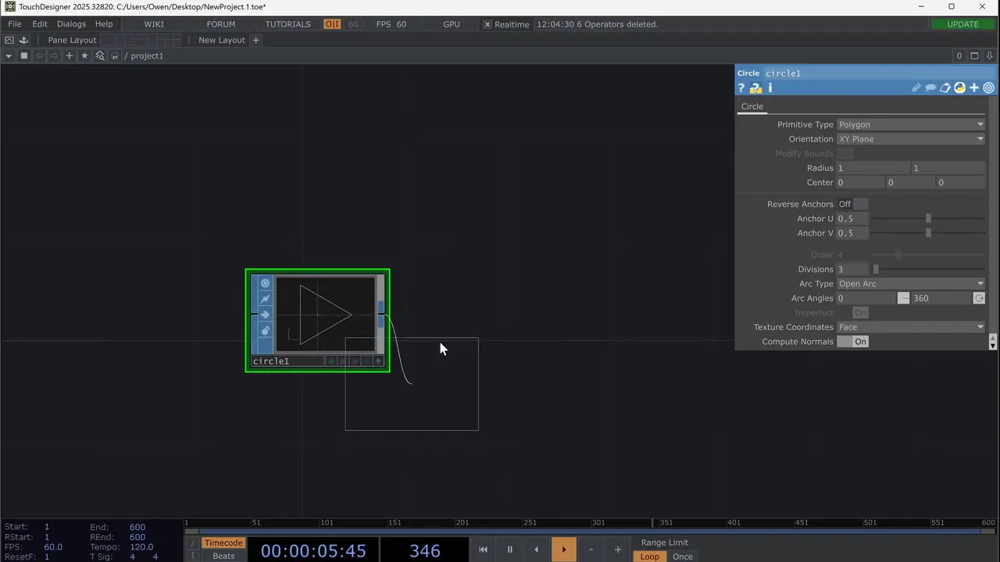
One point at a time
- There is only ever one point of light. A circle is that point travelling round the circle, fast enough that you see a solid shape. Start here, lesson 2 explains how the cube’s scanners do it.
- That is why laser content suits vector graphics: shapes described by points and lines. In TouchDesigner those are SOPs, its geometry operators.
- Pictures and video (TOPs) can’t go to the laser as they are. Lesson 3 shows how to trace them into outlines.
A first test shape, as in the video
- Start from an empty project: the presenter deletes the default network and closes the Palette.
- Add a Circle SOP. Set Arc Type to Open Arc and Divisions to 3, which makes a triangle. Open Arc isn’t needed, but it makes TouchDesigner’s view closer to what the laser draws.
- Add a Transform SOP and give its Z rotation an expression that grows with time, so the triangle spins.
- End the chain with a Null SOP. The laser part in lesson 2 reads from this Null.
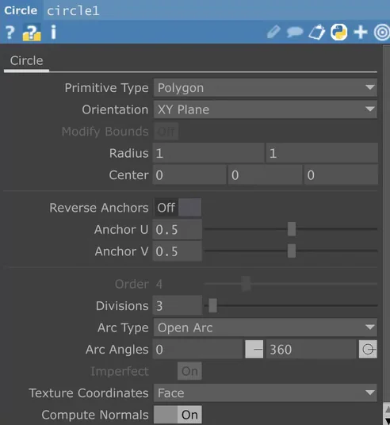
Preview without a cube
You can see your content in TouchDesigner with no cube connected. The video builds a laser‑style preview from the same SOP:
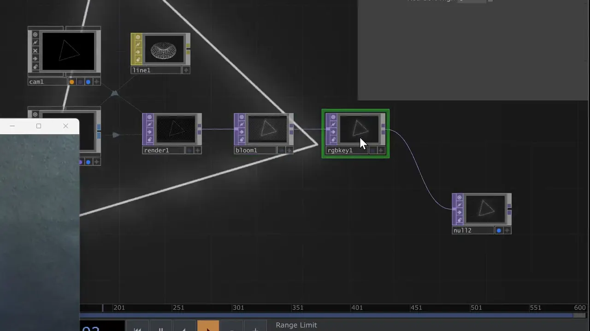
- Connect the SOP to a Geometry COMP, and add a Camera COMP.
- Add a Line MAT and drag it onto the Geometry COMP as its material.
- Add a Render TOP and send it to a Null TOP.
- For a glow like a beam’s, the presenter adds a Bloom TOP after the Render TOP, then an RGB Key TOP to remove the alpha. The look is his choice.
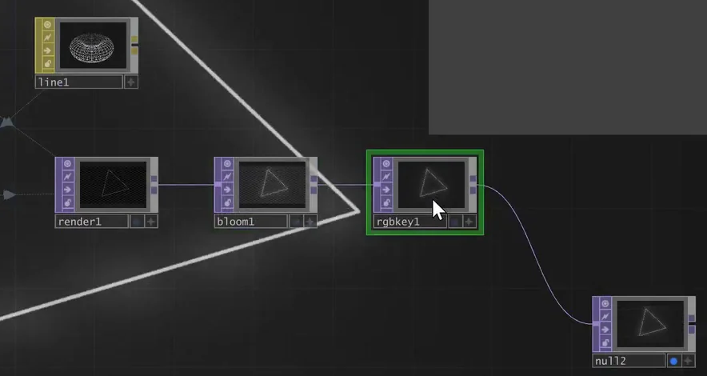
Check yourself
Put the video’s test shape chain in order.
- A Circle SOP with Divisions 3
- A Transform SOP that rotates it
- A Null SOP at the end
- The laser part reads from the Null
The shape first, then the Transform that spins it, then a Null at the end. The Laser CHOP in lesson 2 reads from that Null.
In the manual: Ether Dream Control Mode·Flicker and render quality
Lesson complete. On to lesson 2.
Completed
Lesson 2 of 6
Connect: Ether Dream and the laser CHOPs
In Ether Dream mode the cube works like an Ether Dream DAC, a network laser interface, so software with an Ether Dream output can send to it. In TouchDesigner, a Laser CHOP turns your SOP into laser data and a Laser Device CHOP sends it to the cube’s IP address.
Get the cube ready
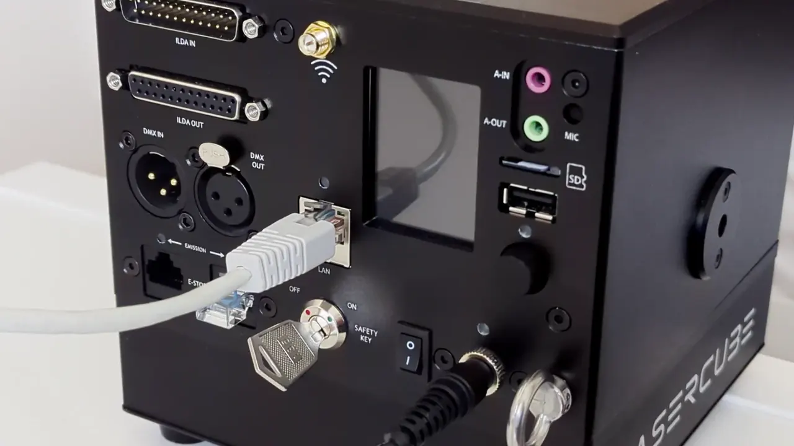
- Network: connect the cube and the computer to the same network (manual: Connection Settings). In the video the Ultra MK2 has a cable to the home router in LAN client mode, and the router gives it its IP address. The cube can also make its own network, as a LAN server or a WiFi server (Connect, lesson 1); for one computer on a direct cable, use LAN server (Connect, lesson 3). Where local WiFi may be congested, the manual recommends an Ethernet cable in LAN client mode.
- Interlock and power: the safety jumper, or an E‑Stop (required in the US), in one of the E‑STOP ports, the safety key in at OFF, then switch on.
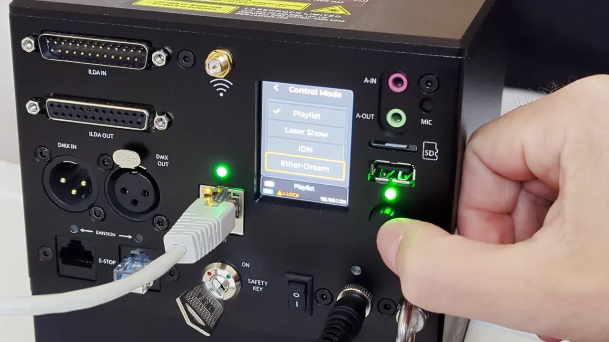
- Ether Dream mode: in the cube’s main menu choose Control Mode, turn the knob to Ether‑Dream and push it. The cube asks “Control mode has changed. Restart Now?”: choose Yes, and it restarts into Ether Dream mode. Afterwards the status bar reads Ether‑Dream. The LaserCube WiFi has no Ether Dream mode, so this works only with the Ultra MK2 and Pro.
- IP address: read it at the bottom right of the status bar. You type it into TouchDesigner.
- Arm it when you’re ready to project, with the beam block set first (Start here, lesson 8): turn the key to ON. The EMISSION LEDs light and the I‑LOCK warning goes. With an E‑Stop connected, start it with the green START button (Start here, lesson 6). A tick by LAN‑C means the cube is connected in LAN client mode.
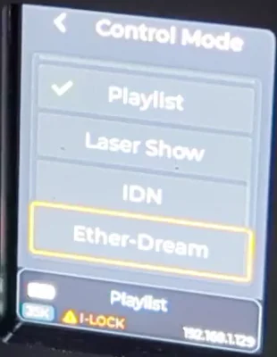
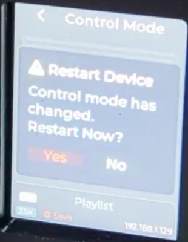
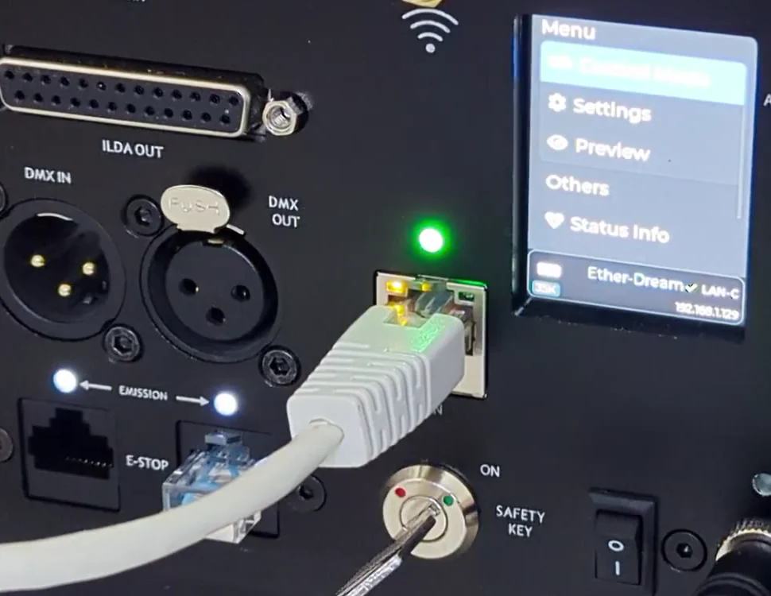
The cube’s own settings still apply. Unlike LaserOS mode, Ether Dream mode keeps the cube’s Image Setup, Colour Balance and Safety Zone (Settings → Projection) available, and they apply to everything TouchDesigner sends. Lesson 5 uses the Safety Zone.
Send from TouchDesigner
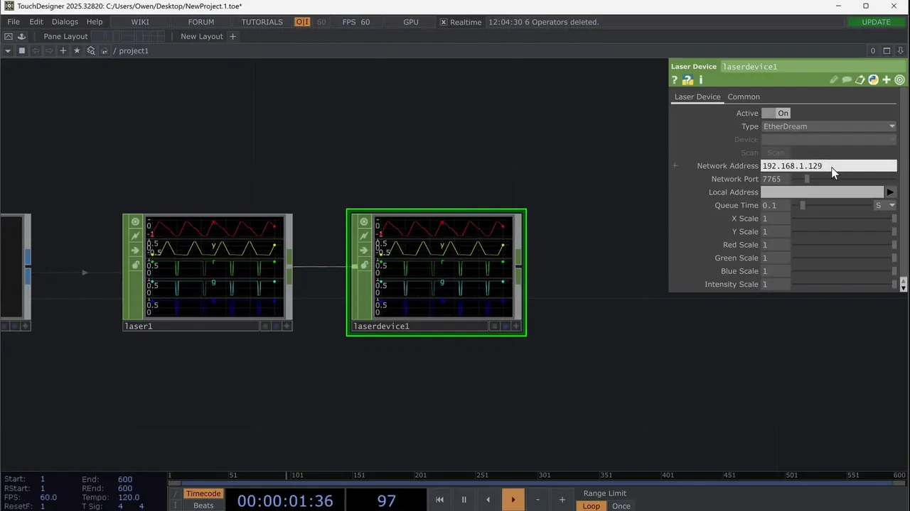
- Add a Laser CHOP (in the OP Create Dialog, CHOP tab). Set Source OP to SOP and SOP to your Null (null1). Until a SOP is set it shows an error.
- Output Sample Rate: TouchDesigner’s default is 48000; set it to 30000, as the videos do (the presenter chose it to match his cube). The manual gives the Ultra MK2 and Pro a scan speed of more than 35,000 points per second at 7°.
- The Laser CHOP’s output holds, for every point, an x and y position and a red, green and blue value.
- Add a Laser Device CHOP after it. Set Type to EtherDream, type the cube’s IP address as Network Address, and leave Network Port at 7765, the port Ether Dream uses. Device and Scan are greyed out for EtherDream: you type the address yourself. The video leaves Queue Time (0.1 s) and the scales as they are.
- With the cube armed, it projects. The manual: a green status bar background means samples are arriving over the network.
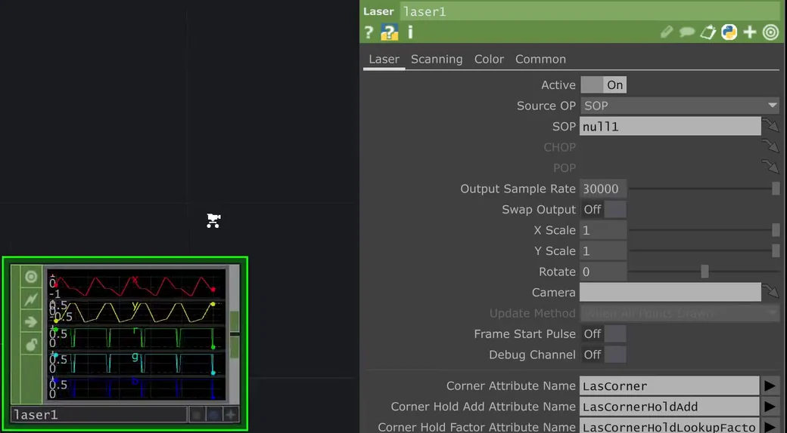
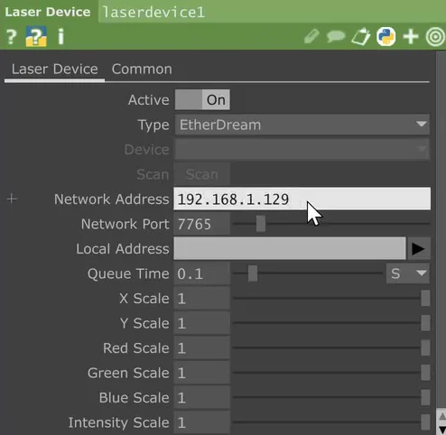
Size and brightness
- To make the whole picture smaller, use the Laser CHOP’s X Scale and Y Scale on its Laser page (0.5 in the video). A Transform SOP changes only the artwork itself.
- To make it dimmer, use Red Scale, Green Scale and Blue Scale on the Laser CHOP’s Color page. The presenter sets them to 0.5 because the beam was too bright for his camera.
- Some of the flicker and jumping in the webcam view comes from the camera, the presenter says; in the room it looks cleaner.
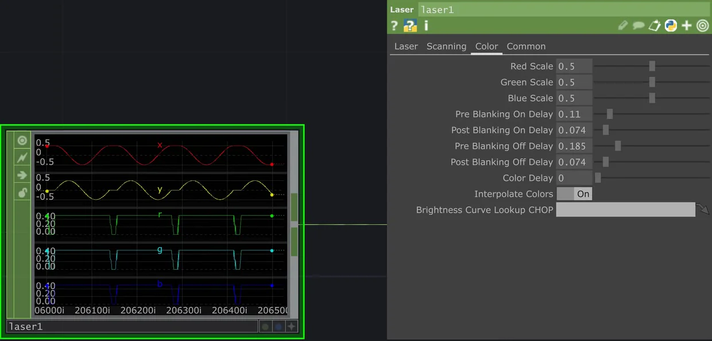
Check yourself
Put the manual’s steps for Ether Dream mode in order.
- Connect the cube and the computer to the same network
- Choose Control Mode, Ether‑Dream: the cube restarts
- Read the IP address at the bottom right of the status bar
- Type it into the Laser Device CHOP, Type EtherDream
Network first, then Ether Dream mode, then the IP address from the status bar, then the software: in TouchDesigner, a Laser Device CHOP with Type EtherDream and port 7765.
In the manual: Ether Dream Control Mode·Connection Settings·The status bar·Key, E‑Stop and interlock·Technical specifications
Lesson complete. On to lesson 3.
Completed
Lesson 3 of 6
Shapes, the drawing area and points
Almost any SOP can become laser content, but the laser has limits: a fixed drawing area, polygons only, and only so many points per second. This lesson covers those, then pictures and 3D shapes.
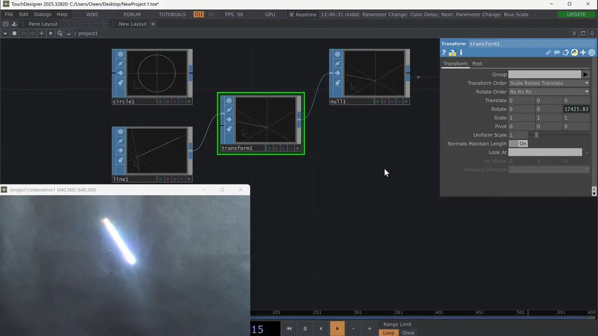
The drawing area
- SOPs offer all the basic shapes: lines, rectangles, circles, triangles and more.
- The laser’s drawing area runs from ‑1 to +1. A Line SOP from 0 to 1 (Point A 0 0 0, Point B 1 0 0) spins around its end at the centre; from ‑1 to 1 it spans the full width.
- A Rectangle SOP needs Size 2 by 2 to fill the area. Anything beyond it is cut off at the edges. (In the video it isn’t, because the whole output is scaled to 0.5.)
- A Merge SOP combines several shapes into one output.
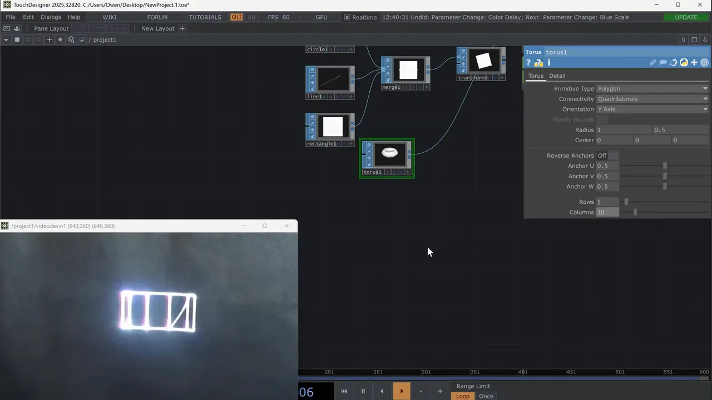
Polygons only
The Laser CHOP takes polygons only. A Torus SOP starts as a mesh, so the Laser CHOP shows “Input geometry contains non‑polygon primitives”, and the laser shows nothing while the error is there. The fix: set the SOP’s Primitive Type to Polygon.
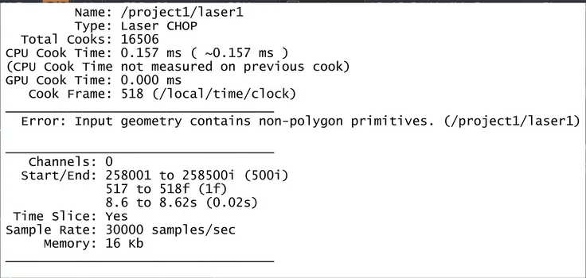
Keep the point count low
- The scanners can draw only so many points per second (manual). With too much detail the picture flickers or draws too slowly.
- In the video, a torus with 20 rows and 40 columns is far too much. At 10 by 20 it has 200 points and still draws too slowly; the three simple shapes together had 47. Halving again to 5 rows and 10 columns helps, but it still isn’t clean.
- To see the count, middle‑click a node for its info, or add an Info CHOP on the Null with Scope set to num_points and keep it in view.
- A 3D wireframe draws both its front and its back.
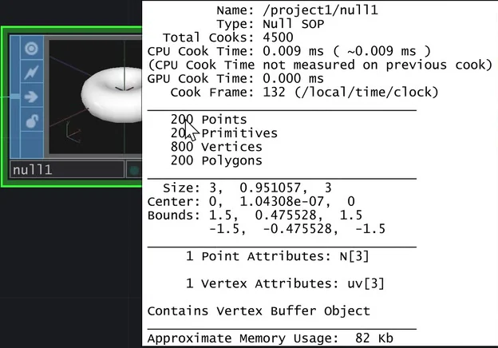
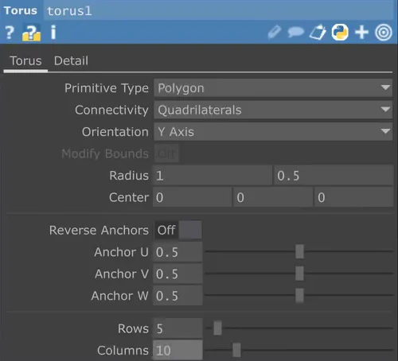
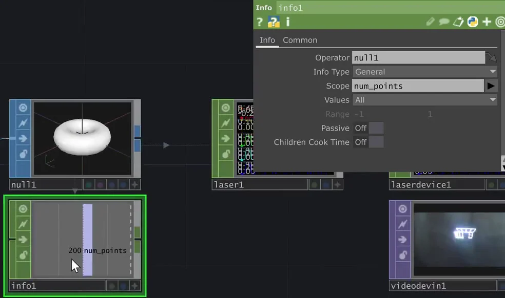
Pictures and video
Pictures and video (TOPs) can’t go to the laser directly. A Trace SOP turns a TOP into outlines: set its TOP Name to your TOP, for example a Movie File In TOP, and scale the result with a Transform SOP on the traced shape. The video uses black‑and‑white footage, where the Threshold setting matters little. The Filters page sets Resample Shapes, Step Size and smoothing; the presenter keeps the defaults. A webcam or depth camera can be traced too.
The video’s own trace demo comes after the clip above and isn’t shown in this course.
3D shapes need a camera
- The laser uses only X and Y. In the video, a Noise SOP on a flat circle wobbles in TouchDesigner but not on the wall: a SOP to CHOP shows that only tz, the depth, changed.
- The fix: add a Camera COMP and enter it in the Laser CHOP’s Camera field (Laser page). Depth then shows as perspective.
- On the camera’s View page, Perspective gives depth; orthographic looks flat again.
- The presenter’s tip: add a camera even for flat shapes, and switch it to orthographic when you want them flat.
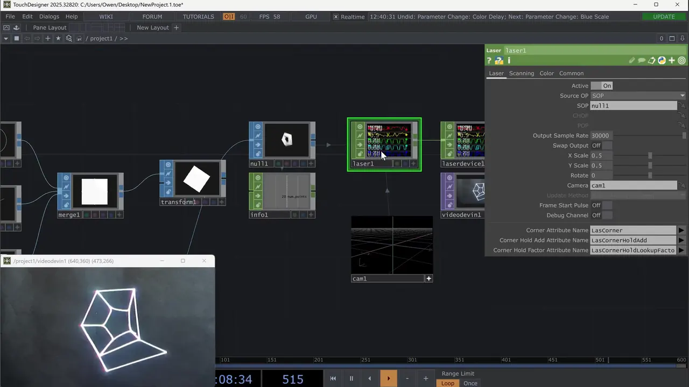
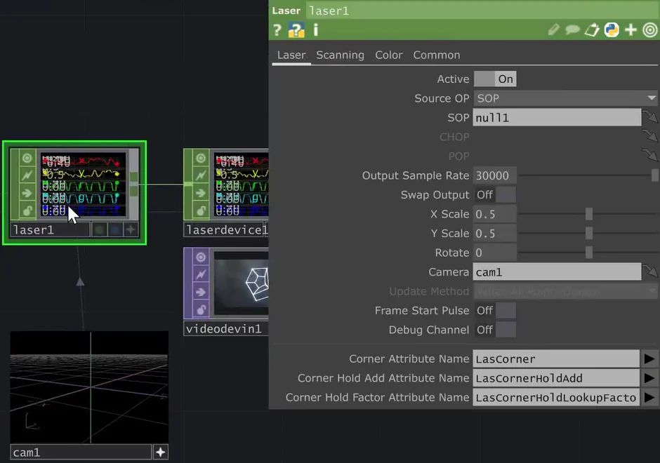
Check yourself
In the manual: Flicker and render quality·Ether Dream Control Mode
Lesson complete. On to lesson 4.
Completed
Lesson 4 of 6
Colour
Every point the Laser CHOP sends carries a red, a green and a blue value from 0 to 1, as well as its position. You can give a whole shape one colour, or colour it point by point from an image.
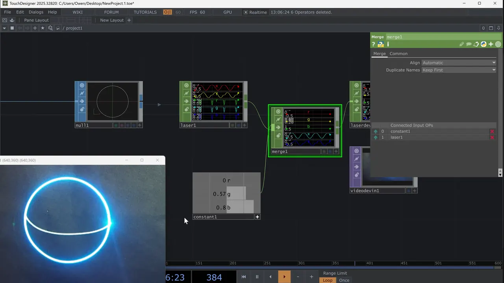
One colour
- Add a Constant CHOP with three channels named r, g and b. The video uses r 0, g 0.57 and b 0.8, a blue‑green.
- Add a Merge CHOP with the Constant CHOP as its first input and the Laser CHOP as its second. Set Duplicate Names to Keep First.
- Send the Merge CHOP to the Laser Device CHOP. The whole shape takes that one colour.
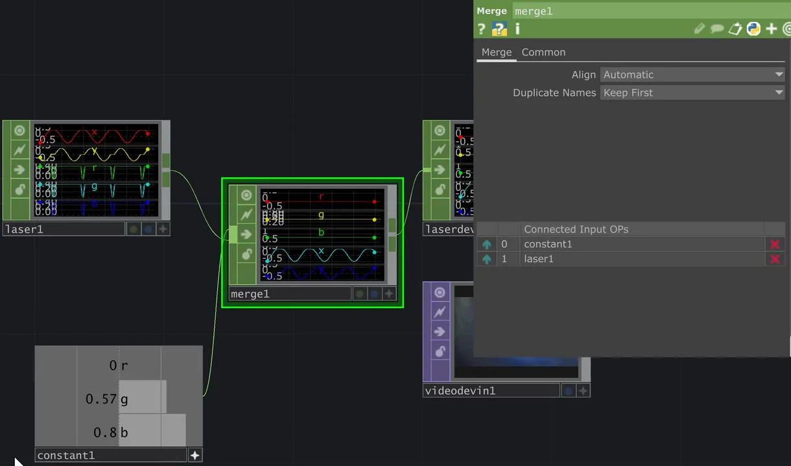
Colour from an image
The presenter’s recommended way: look up an image (a TOP) at each point’s position and write the colour back to the point. Any TOP can be the source, such as a video, a webcam or an animation. His demo uses a black‑to‑white ramp, so it changes brightness rather than hue.
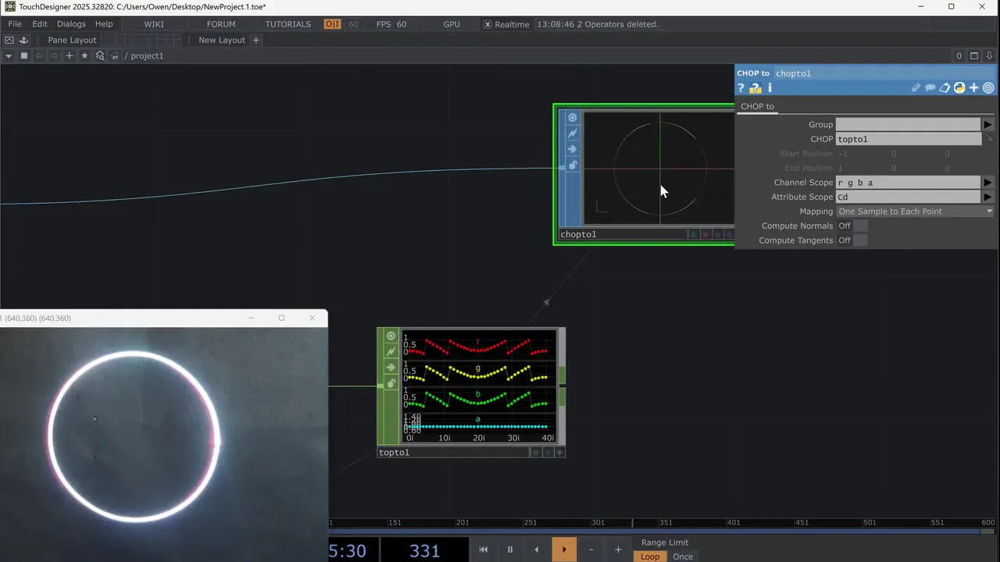
- After the shape (circle1), add a Null SOP (null2) and a Texture SOP (texture1), as on screen.
- Add a SOP to CHOP on texture1 with Position XYZ on: it gives each point’s position as tx, ty and tz.
- The colour source: a Ramp TOP into a Null TOP. The video animates the ramp’s Phase with absTime.seconds * 0.5, so you can see it working.
- Add a TOP to CHOP, set its TOP to that Null TOP, and wire the SOP to CHOP into it. It looks up the image’s colour at each point’s position and outputs r, g, b and a. The laser doesn’t use a, the alpha.
- Add a CHOP to SOP: CHOP set to the TOP to CHOP, texture1 wired in for the shape, Channel Scope r g b a, Attribute Scope Cd (the point colour) and Mapping One Sample to Each Point. Feed it into the Null SOP that the Laser CHOP reads: the position comes from the shape, the colour from the image.
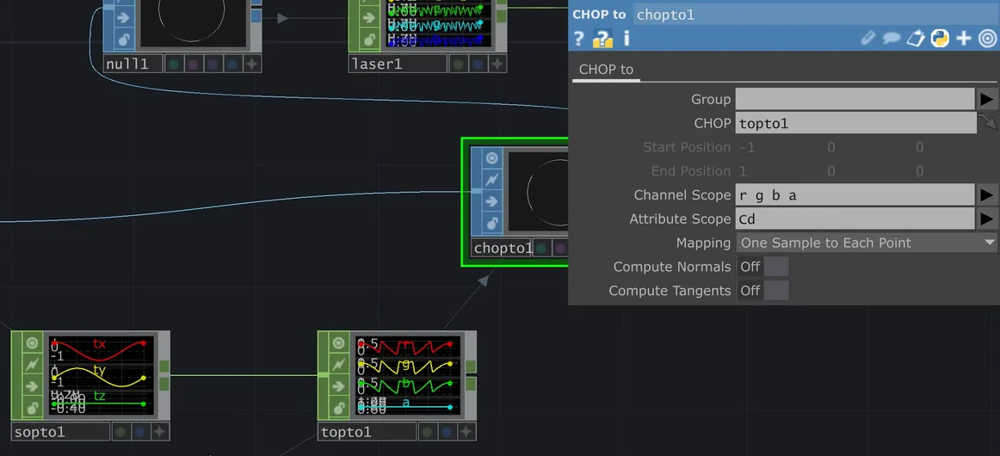
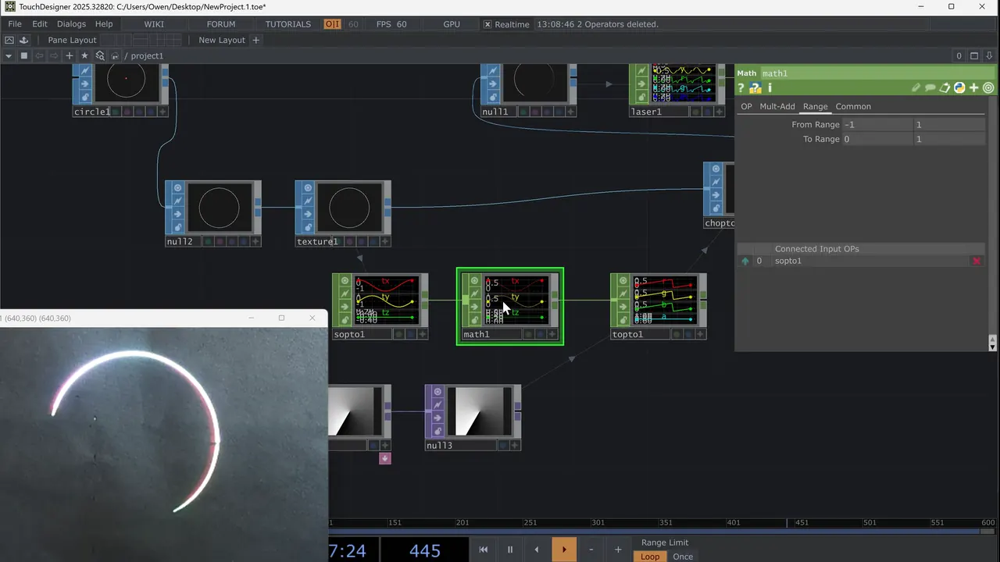
- The shape’s positions run from ‑1 to 1, the image’s from 0 to 1. Put a Math CHOP between the SOP to CHOP and the TOP to CHOP: on its Range page, From Range ‑1 1 and To Range 0 1. It only changes where the colour is looked up, not the shape. Without it the image repeats in four quadrants.
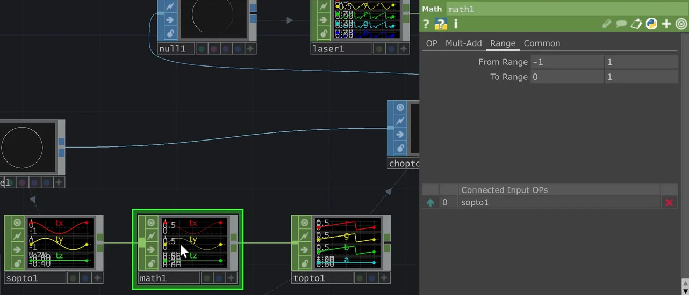
Smoother colour
- A shape with few points colours badly: a triangle has only four points to blend between.
- On the TOP to CHOP’s Crop page, set Interpolate to Linear instead of Nearest Sample.
- Add points: more Divisions on a circle (64 in the video), or a Refine SOP after the shape, whose U Divisions adds points along its lines without changing it. To see the points, right‑click the viewer and open Display Options, SOP Markers.
- Don’t overdo it: the laser can draw only so many points. In the video 64 points draw cleanly; at 514 the laser struggles to keep up on camera, though the presenter says it looks better in real life.
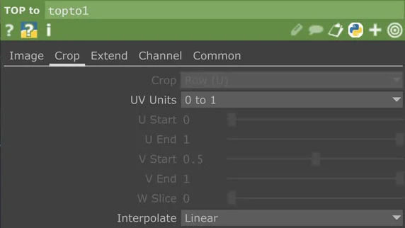
The finished network (below): circle1, then refine1, null2 and texture1; sopto1, math1 and topto1 look up the ramp; chopto1 joins position and colour and feeds null1, laser1 and laserdevice1.
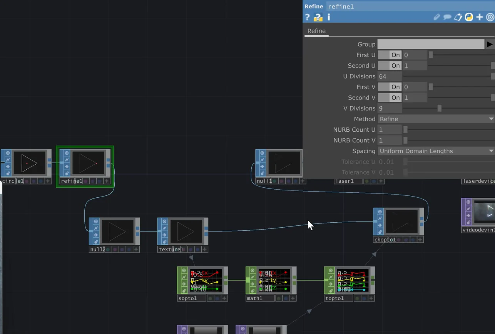
Check yourself
Put the CHOPs of the image method in order, from the shape’s positions to the colour.
- SOP to CHOP: each point’s position
- Math CHOP: ‑1 to 1 becomes 0 to 1
- TOP to CHOP: the image’s colour at each point
- CHOP to SOP: the colour written to Cd
Positions out of the shape, remapped to the image’s range, used to look up the colour, then written back to the points as Cd.
In the manual: Colour Balance on the cube·Flicker and render quality
Lesson complete. On to lesson 5.
Completed
Lesson 5 of 6
Mouse and music, within the rules
Anything TouchDesigner has as CHOP data, such as the mouse, audio, or a device or sensor, can drive the shape you send to the laser. The safety rules stay the same whatever drives the picture.
Never aim the laser at people, and never scan the audience: the LaserCube is not made for audience scanning, whatever the setup. Wherever people may be, every beam stays at least 3 m (10 ft) above the floor, with the beam block set. A safety zone never makes it safe to aim at people.
The mouse
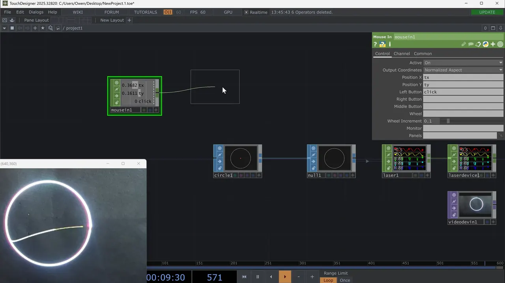
- Add a Mouse In CHOP: Output Coordinates Normalized Aspect, Position X tx, Position Y ty, and type click into Left Button. Connect it to a Null CHOP.
- Drag tx and ty from the Null onto the Circle SOP’s Center. The circle now follows the mouse.
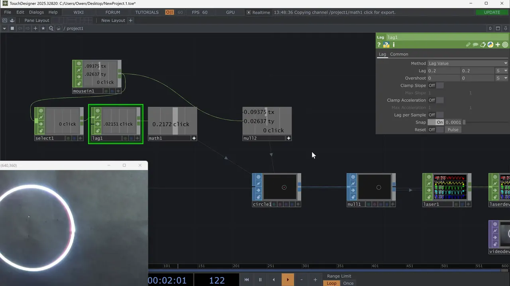
- From the Mouse In, add a Select CHOP with Channel Names click, then a Math CHOP: on its Range page, From Range 0 1 and To Range 0.2 1. Drag its click channel onto the circle’s Radius. A click now makes the circle bigger.
- Put a Lag CHOP between the Select and the Math (Lag 0.2 and 0.2 seconds in the video). The jump becomes a smooth grow.
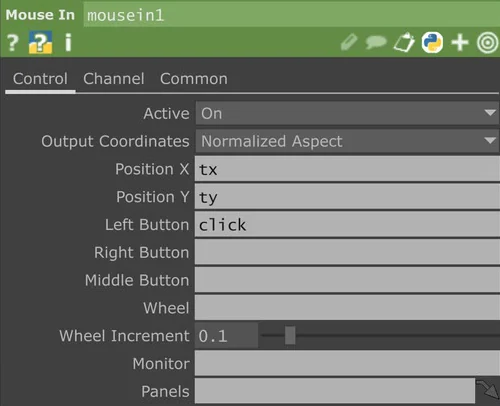
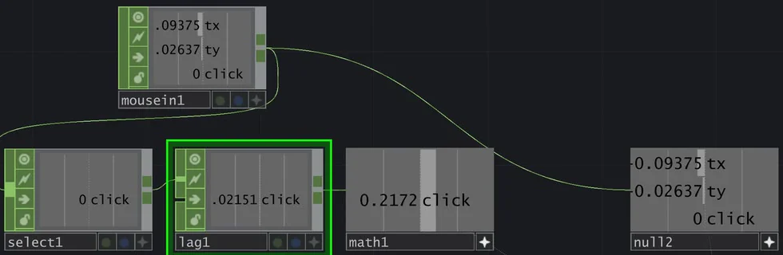
Music
This part of the video isn’t embedded here; the steps and screenshots below follow it.
- Bring in audio with an Audio File In CHOP and add an Audio Device Out CHOP to hear it.
- Add a Line SOP from Point A ‑1 0 0 to Point B 1 0 0: it fills the width of the drawing area.
- Add an Audio Spectrum CHOP. By default it gives about 22,050 samples, far too many for the laser. Setting FFT Size to 128 loses too much detail, so keep FFT Size at 8192 and set Output Length to Set Length Manually, with Set Output Length 128. Give the Line SOP 128 points (Number of Points) to match.
- Add a Select CHOP with Channel Names chan1, the left channel. Then a CHOP to SOP with the Line SOP wired in: CHOP select1, Channel Scope chan1, Attribute Scope P(1), the Y position, and Mapping One Sample to Each Point. Each spectrum value now lifts one point of the line, like a graphic equaliser.
- For a mirror image: a second Select with chan2, the right channel, a Math CHOP with Multiply ‑1 to flip it, a second CHOP to SOP on the same line, and a Merge SOP for both lines. A Math CHOP with Multiply 2 right after the spectrum makes it bigger.
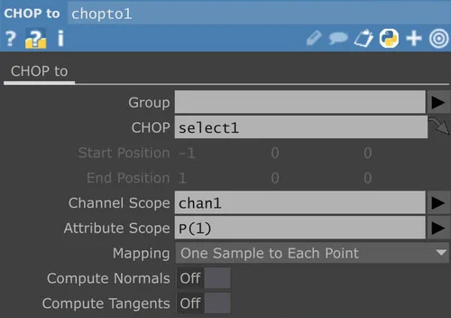
Any data, same chain. Whether it comes from the mouse, audio or a sensor, the data changes a SOP, and the SOP goes through the Laser CHOP and the Laser Device CHOP as before.
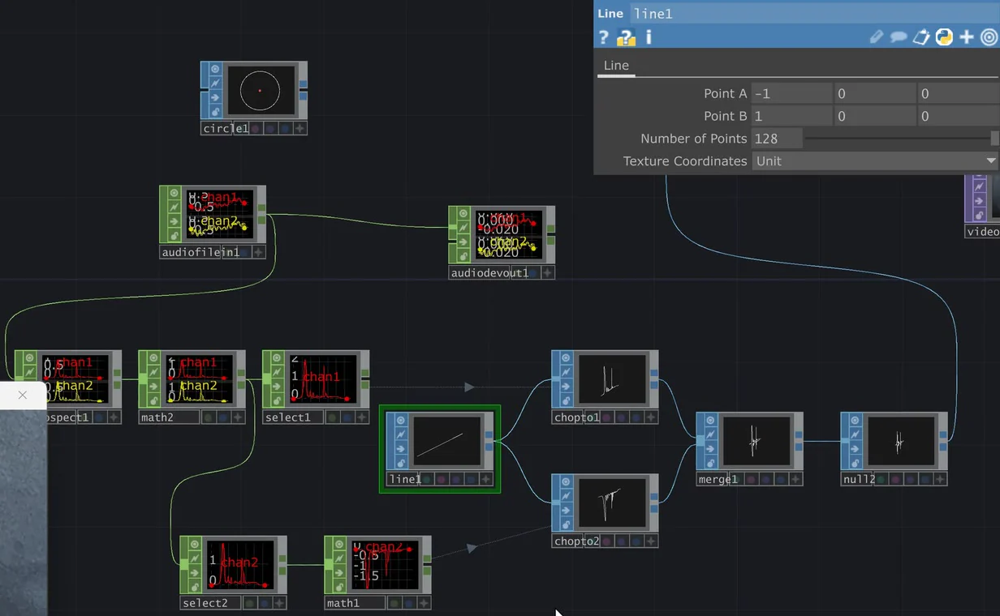
The cube’s Safety Zone in Ether Dream mode
- In Ether Dream mode the cube’s own Safety Zone applies to everything TouchDesigner sends. Set it on the cube under Settings → Projection → Safety Zone.
- By default it is a keep‑within zone, previewed in green: beams outside it are reduced by the attenuation setting, and 100% blanks them completely. Use it for the target area where the beams may safely end.
- With the invert toggle it becomes a keep‑out zone, previewed in red: for example to keep beams away from a camera or a video projector.
- The preview toggle projects the zone’s outline, with the laser interlock enabled.
- A zone works on top of the beam block and the 3 m rule, never instead of them (Start here, lesson 8).
Check yourself
Two set‑ups. Is it OK to go ahead? Decide, then read why.
You want the laser circle to follow a dancer around the stage, steered with the mouse. You add a keep‑out zone around the dancer so the beam skips them.
Never aim the laser at people. A safety zone never makes it safe to aim at people.
Can a zone make it OK to aim the laser at a person?
The equaliser is drawn on a wall in an area closed to everyone, more than 3 m from where guests stand. The cube is in the same closed‑off area, the beam block is set, and every other item on Start here’s pre‑show checklist is ticked. You add a keep‑within zone on the cube around the part of the wall where the beams end.
The beams end in a restricted area away from people, the beam block is set, the rest of the pre‑show checklist is done, and the keep‑within zone marks the target area on top of those rules.
Where do the beams end, and is the zone used on top of the rules or instead of them?
In the manual: Safety zone on the cube·Hardware installation·Safety guidelines·Ether Dream Control Mode
Lesson complete. On to lesson 6.
Completed
Lesson 6 of 6
When nothing shows
TouchDesigner looks right, but the cube shows nothing? Work along the chain, from the cube to your shape. The cube’s status bar answers most of it.
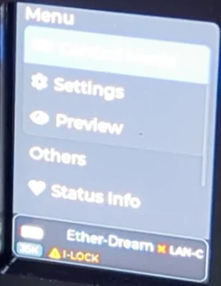
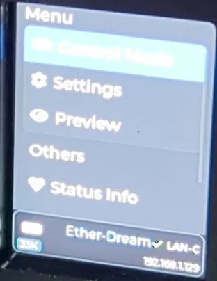
On the cube
- Armed? Key at ON, EMISSION LEDs lit, no I‑LOCK warning on the status bar. With an E‑Stop connected, it has to be started with the green START button.
- Ether‑Dream on the status bar? If it shows another mode, choose Control Mode, Ether‑Dream.
- Connected? A tick by LAN‑C means connected in LAN client mode. In the video a red cross shows there until the connection is up. The cube and the computer must be on the same network.
- Anything arriving? The manual: a green status bar background means samples are arriving over the network, and the cube’s Preview shows the points it receives.
- The cube’s Safety Zone: with a keep‑within zone at 100% attenuation, anything outside the zone is fully blanked.
In TouchDesigner
- Laser Device CHOP: Active On, Type EtherDream, Network Address the same as the IP on the cube’s status bar, Network Port 7765.
- Laser CHOP: its SOP is set, and it shows no error. “Input geometry contains non‑polygon primitives” means a SOP isn’t polygons: set its Primitive Type to Polygon (lesson 3).
- Inside the drawing area? Shapes beyond ‑1 to +1 are cut off; make them smaller, or scale the output with X Scale and Y Scale.
- A 3D change that doesn’t show: put a camera in the Laser CHOP’s Camera field (lesson 3).
- Flickers or draws slowly: too many points. Check num_points and simplify.
- No colour from your image: check that the CHOP to SOP writes to Cd, and the Math CHOP’s ranges (lesson 4).
Still nothing? Email support@laseros.com.
Check yourself
In the manual: The status bar·Ether Dream Control Mode·Connection Settings·Safety zone on the cube
Lesson complete. Next: the final quiz.
Final quiz
Final quiz
10 questions picked at random, one from each of the course’s 10 topics. Get 8 right to pass. You can try as many times as you like.
Finish all six lessons first. Still to do:
Certificate
Your certificate
Pass the final quiz to get your certificate. Go to the final quiz
Well done. Type your name as you want it on the certificate.
Your certificate is made right here in your browser. Your name isn’t sent anywhere; it’s only kept in this browser.

Download not starting? Press and hold the certificate (on a computer, right-click it) and save the image.
This is a certificate of completion. It is not a licence, a Laser Safety Officer (LSO) qualification or permission to run public laser shows. Every rule from Start here’s pre‑show checklist applies whenever the laser is on.
More courses: LaserCube Academy.